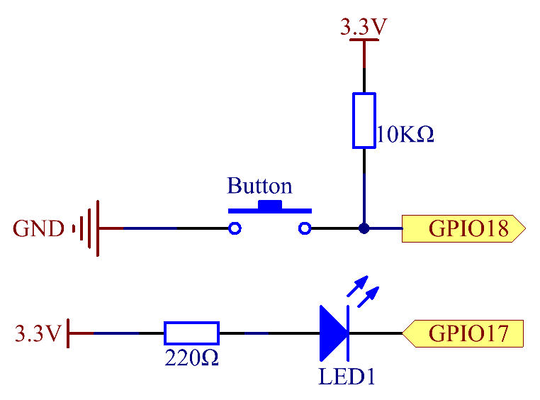
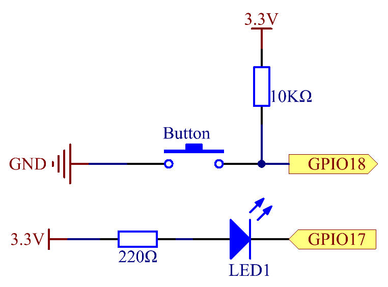

注釈
こんにちは、SunFounderのRaspberry Pi & Arduino & ESP32愛好家コミュニティへようこそ！Facebook上でRaspberry Pi、Arduino、ESP32についてもっと深く掘り下げ、他の愛好家と交流しましょう。
参加する理由は？
エキスパートサポート：コミュニティやチームの助けを借りて、販売後の問題や技術的な課題を解決します。
学び＆共有：ヒントやチュートリアルを交換してスキルを向上させましょう。
独占的なプレビュー：新製品の発表や先行プレビューに早期アクセスしましょう。
特別割引：最新製品の独占割引をお楽しみください。
祭りのプロモーションとギフト：ギフトや祝日のプロモーションに参加しましょう。
👉 私たちと一緒に探索し、創造する準備はできていますか？[ここ]をクリックして今すぐ参加しましょう！
2.1.1 ボタン
前書き
このレッスンでは、LEDをボタンでオンまたはオフにする方法を学習する。
部品

原理
ボタン
ボタンは電子デバイスを制御するために使用される一般的な部品である。通常、回路を接続または遮断するためのスイッチとして使用される。ボタンにはさまざまなサイズと形状があるが、ここで使用するものは、次の図に示すように6mmのミニボタンである。
左側の2つのピンが接続されており、右側の方は左側と同じである。以下を参照してください：

以下に示す記号は、通常、回路内のボタンを表すために使用される。

ボタンを押すと、4つのピンが接続され、回路が閉じる。
回路図
Raspberry Piの入力として常開ボタンを使用し、接続は下の概略図に示されている。 ボタンを押すと、GPIO18は低レベル（0V）に変わる。 プログラミングによってGPIO18の状態を検出できる。 つまり、GPIO18が低レベルになった場合、ボタンが押されたことを意味する。 ボタンが押されたときに対応するコードを実行すると、LEDが点灯する。
 

{kind=link}
実験手順
ステップ1： 回路を作る。

C言語ユーザー向け
ステップ2： コードファイルを開く。
cd ~/davinci-kit-for-raspberry-pi/c/2.1.1/
注釈
cd を使用して、この実験のコードのパスにディレクトリを変更する。
ステップ3： コードをコンパイルする。
gcc 2.1.1_Button.c -lwiringPi
ステップ4： EXEファイルを実行する。
sudo ./a.out
コードの実行後、ボタンを押すと、LEDが点灯する。それ以外の場合は消灯する。
コード
#include <wiringPi.h>
#include <stdio.h>
#define LedPin 0
#define ButtonPin 1
int main(void){
// When initialize wiring failed, print message to screen
if(wiringPiSetup() == -1){
printf("setup wiringPi failed !");
return 1;
}
pinMode(LedPin, OUTPUT);
pinMode(ButtonPin, INPUT);
digitalWrite(LedPin, HIGH);
while(1){
// Indicate that button has pressed down
if(digitalRead(ButtonPin) == 0){
// Led on
digitalWrite(LedPin, LOW);
// printf("...LED on\n");
}
else{
// Led off
digitalWrite(LedPin, HIGH);
// printf("LED off...\n");
}
}
return 0;
}
コードの説明
#define LedPin 0
T_ExtensionボードのGPIO17ピンは、wiringPiのGPIO0と同じである。
#define ButtonPin 1
ButtonPinはGPIO1に接続されている。
pinMode(LedPin, OUTPUT);
LedPinを出力として設定し、値を割り当てる。
pinMode(ButtonPin, INPUT);
ButtonPinを入力として設定し、ButtonPinの値を読み取る。
while(1){
// Indicate that button has pressed down
if(digitalRead(ButtonPin) == 0){
// Led on
digitalWrite(LedPin, LOW);
// printf("...LED on\n");
}
else{
// Led off
digitalWrite(LedPin, HIGH);
// printf("LED off...\n");
}
}
if(digitalRead(ButtonPin))== 0: ボタンが押されたかどうかを確認してください。
ボタンを押してLEDを点灯させると、 digitalWrite(LedPin、LOW) を実行してください。
Python言語ユーザー向け
ステップ2： コードファイルを開く。
cd ~/davinci-kit-for-raspberry-pi/python
ステップ3： コードを実行する。
sudo python3 2.1.1_Button.py
それから、ボタンを押すと、LEDが点灯する。もう一度ボタンを押すと、LEDが消灯する。同時に、LEDの状態が画面にプリントされる。
コード
注釈
以下のコードを 変更/リセット/コピー/実行/停止 できます。 ただし、その前に、 davinci-kit-for-raspberry-pi/python のようなソースコードパスに移動する必要があります。
import RPi.GPIO as GPIO
import time
LedPin = 17 # Set GPIO17 as LED pin
BtnPin = 18 # Set GPIO18 as button pin
Led_status = True # Set Led status to True(OFF)
# Define a setup function for some setup
def setup():
# Set the GPIO modes to BCM Numbering
GPIO.setmode(GPIO.BCM)
GPIO.setup(LedPin, GPIO.OUT, initial=GPIO.HIGH) # Set LedPin's mode to output, and initial level to high (3.3v)
GPIO.setup(BtnPin, GPIO.IN) # Set BtnPin's mode to input.
# Define a callback function for button callback
def swLed(ev=None):
global Led_status
# Switch led status(on-->off; off-->on)
Led_status = not Led_status
GPIO.output(LedPin, Led_status)
if Led_status:
print ('LED OFF...')
else:
print ('...LED ON')
# Define a main function for main process
def main():
# Set up a falling detect on BtnPin,
# and callback function to swLed
GPIO.add_event_detect(BtnPin, GPIO.FALLING, callback=swLed)
while True:
# Don't do anything.
time.sleep(1)
# Define a destroy function for clean up everything after
# the script finished
def destroy():
# Turn off LED
GPIO.output(LedPin, GPIO.HIGH)
# Release resource
GPIO.cleanup()
# If run this script directly, do:
if __name__ == '__main__':
setup()
try:
main()
# When 'Ctrl+C' is pressed, the program
# destroy() will be executed.
except KeyboardInterrupt:
destroy()
コードの説明
LedPin = 17
GPIO17をLEDピンとして設定する。
BtnPin = 18
GPIO18をボタンピンとして設定する。
GPIO.add_event_detect(BtnPin, GPIO.FALLING, callback=swLed)
BtnPinで立ち下がり検出を設定してから、BtnPinの値が高レベルから低レベルに変わると、 ボタンが押されたことを意味する。次のステップは、関数swledを呼び出す。
def swLed(ev=None):
global Led_status
# Switch led status(on-->off; off-->on)
Led_status = not Led_status
GPIO.output(LedPin, Led_status)
ボタンコールバックとしてコールバック関数を定義する。
ボタンが初めて押され、 not Led_status 条件がfalseの場合、
GPIO.output() 関数を呼び出してLEDを点灯させる。
ボタンをもう一度押すと、LEDの状態が false から true に変換され、LEDが消灯する。